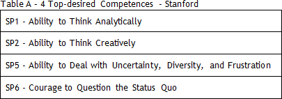
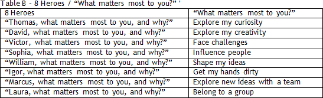

I did. Were they admitted to Stanford?
Yes, easily... (Laughing) But before we discuss their essays, we should recall that in order to build your Stanford package, you must have done the Big Synthesis Exercise.
Relax, Megaron. I have obtained my friends’ feedback. I am ready to build the 00 version of Stanford, my FIRST SCHOOL.
Great. Just checking: Have you also read Km 24, MBA Planner? Make sure that you have a correct sequence of school to apply to. Once you build the package for your first school, you should be able to draw a lot from the exercise and use it for the SECOND SCHOOL.
I remember that. You suggested starting with Stanford, which is a more synthetic/comprehensive application package. You’re saying that after the FIRST SCHOOL my work for the SECOND SCHOOL will be easier, right?
That’s the goal. You must carefully select a sequence of schools so that the work in the first can be leveraged upon for the next school.
Ok.
It is pretty clear that building a 00 version of a school is basically making a “SYNTHESIS of your SYNTHESIS.”
What do you mean?
We’ve talked about that. The applicant’s number 1 mistake is to start drafting from scratch. You would act like a movie director making the scenes without following a screenplay. Writing essays is not an exercise of ANALYSIS; it is instead, of SYNTHESIS.
For god’s sake, I would not be able to answer the essay questions. And the word limit makes it worse. Stanford does not allow me to write more than 1,100 words.
Now you have to deal with further restriction, the word limit imposed by each school.
One doubt: my current manager, MBA Wharton, said that it is not good to write the first application for a school that you consider favorite. Since Stanford is my first option, would it not be better to start, for example, with Wharton? He said that Stanford was his last application.
Let’s think about the logic behind your manager’s argument. Most applicants begin to think about their values when they read the essay questions. In other words, they begin to ANALYZE their lives while answering the questions – a basic mistake. He should already know what he is selling before he writes the first word in his essays.
I get it. That’s why he thinks the third/fourth package will become better than the first/second.
Yes, he will be able to SYNTHESIZE his stories only after he practices in the first two packages.
But that is not my case. I have been working hard since March.
You already have your SYNTHESIS, so you can immediately start answering the essay questions of your favorite school.
Fantastic. I saw on the internet that many admissions consultants analyze the essay questions of several b-schools. What’s your opinion on that?
The analyses on essay topics will give you an insight into HOW to answer a specific question, BUT they cannot help you answer the WHY, the inquiring element that brings SYNTHESIS to your sale. In other words, do not waste too much time analyzing the questions if you do not know what you’re selling. Having said that, many admissions consultants offer good analyses of essay topics - I recommend:
1. Accepted
2. Cambridge Essay Services
3. Clear Admit
4. Veritas Prep
2. Cambridge Essay Services
3. Clear Admit
4. Veritas Prep
I understand that generic recommendations are not so valuable, but it is worth the reading.
Yeah. So let’s move on to the essays. The exercise is simple as long as you know what you’re selling.
It is clear.
Now all you have to do is put them together, connect them. Read the set of questions carefully, Stanford.
Cool, Megaron, I got the idea, but I think I need help here. I have only 1,100 words to answer these questions.
Essay 1: What matters most to you, and why?
Essay 2: Why Stanford?
Essay 2: Why Stanford?
Now I will explain the essence of the exercise and then you replicate it to the remaining schools, ok?
Sounds great.
At this moment, forget the “application process” and focus on your SALE. The recommendations from Stanford’s Dean are elucidative: “I hope that you will approach the application process as a way to learn about yourself —that's the goal— with the byproduct being the application that you submit to us.”
Yeah, I understood that when I hired you. After all, you sold me the idea that admission was a byproduct of a far more complex – understand my values.
On essay 1 (‘What matters?’), do you think I should focus exclusively on personal values (‘Who Are You?’)? I noticed that Thomas basically took his “Personal Values” (MOTIVATIONS) from the Big Synthesis and made a few changes in the text.
He added the story on astronomy. He brought more evidence to his theses by using more personal themes. Definitively it’s the most synthetic of all essays. Check what Derrick Bolton writes about the essay 1: “Many good essays describe the "what," but great essays move to the next order and describe how and why these "what’s" have influenced your life. The most common mistake applicants make is spending too much time describing the "what" and not enough time describing how and why these guiding forces have shaped your behavior, attitudes, and objectives in your personal and professional lives.”
Ok, we have followed his recommendation when you asked us to contextualize the WHY’s “Who Are You?” in the 3 STORIES, right?
Neat. I believe they want to read a “what matters most to you?” answer finely aligned with the school’s value.
It is no secret that Stanford seeks students who are aligned with the tagline of the school’s brand: “Change lives. Change organizations. Change the world.”
That is, I must show myself as an entrepreneur.
Not necessarily. Although it appreciates entrepreneurs, the school considers itself a designer of innovative leaders, not necessarily of entrepreneurs. The most important to do is to reveal values/competences associated to entrepreneurship.
And I should look for that pair of strengths/competences aligned with the school’s values?
Naturally the first exercise must be your concern about what you’re selling. At this point you should not worry too much about how the buyer will see your product.
I know. In their Info Session, Stanford insisted: “don’t worry about what you think we want to hear.”
I would also offer such recommendation. Many applicants are concerned exclusively about telling stories that, in their minds, would please the ears of the AdCom.
But that is not the basic concern of communication: please the ears of the recipient of your message?
Naturally, no one is naïve. Of course we have to worry about how they get the message. But understand that most applicants don’t even know what they’re selling and try to adapt a product that does not even exist.
Ok, but here comes the inevitable question: “which of the 8 Competences does Stanford like to see in the stories of its applicants?”
I don't think I will manage not to answer this question, right? Ok, Nicholas, the four competences below are the most interesting to be explored in both essays 1 and 2 – see Table A below.

Ok, in a way, your answer has not surprised me. These competences are associated with entrepreneurial values.
In a way, they are.
However, what is the relationship between Competence and Motivations (WHY’s)? From what I could understand, I should not mention professional aspects in essay 1...
We discussed this on Km “Who Are you?” (Km 17). But I will help you. Observe on the Table B below the main THESIS of each of our heroes in essay 1.

I get it. But I wonder if it would not be good to have a “mix” of the arguments defended by those 8 heroes.
In theory, the prompt answer is NO.
I remember… the issue is lack of room in the essays.
It is not only that… check item 2 (Be Focused) of your Self Brand Exercise.
I see… curious…
What is curious?
There is always a verb: “explore,” “face,” “influence” in each opening.
We have discussed this: “To be is to DO” (Kant). The reader could not care less about your feelings unless you have used them as a basis to do something concrete.
Of course! MOTIVATIONS without ACTIONS are totally worthless.
Ok, I get it. But what about the ‘why?’ part from “What matters most to you and why?”
Good point. Whoever has chatted with a six-year-old clearly understands the WHY-QUESTION issues. Observe this, please:
- I wanna cause impact on people’s lives.
- WHY do you want to cause impact on people’s lives?
- Why, because in that way I can push myself to do my best while helping others.
- Why do you want to push yourself to do your best while helping others?
- Well... because in that way I will be happy.
- Why do you want to be happy?
(Humpf... what a pain in the neck)
- WHY do you want to cause impact on people’s lives?
- Why, because in that way I can push myself to do my best while helping others.
- Why do you want to push yourself to do your best while helping others?
- Well... because in that way I will be happy.
- Why do you want to be happy?
(Humpf... what a pain in the neck)